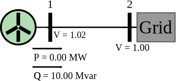
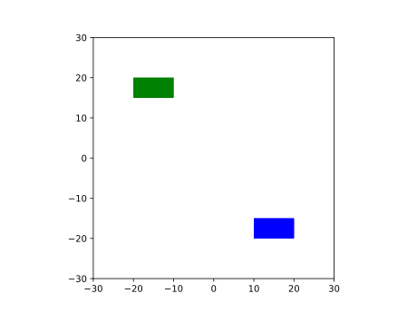

Steady state
Contents
import numpy as np
import matplotlib.pyplot as plt
import pydae.grid_tools as gt
import pydae.ssa as ssa
from IPython.core.display import HTML,SVG
from pydae.svg_tools import svg
import scipy.optimize as sopt
#%config InlineBackend.figure_formats = ['svg']
---------------------------------------------------------------------------
ModuleNotFoundError Traceback (most recent call last)
~\AppData\Local\Temp/ipykernel_23464/2388297788.py in <module>
1 import numpy as np
2 import matplotlib.pyplot as plt
----> 3 import pydae.grid_tools as gt
4 import pydae.ssa as ssa
5 from IPython.core.display import HTML,SVG
ModuleNotFoundError: No module named 'pydae'
%matplotlib widget
import smib_vsc_pq
Steady state#
model = smib_vsc_pq.model()
params = {'p_in_1':1.0,'Dp_r_1':-1.0,'Dq_r_1':1.0}
model.ini(params,'xy_0.json')
#grid.report_x()
#grid.report_y()
sgrid = svg('smib_vsc_pq.svg')
sgrid.set_text('V_1',f"V = {model.get_value('V_1'):2.2f}")
sgrid.set_text('V_2',f"V = {model.get_value('V_2'):2.2f}")
S_n_1 = model.get_value('S_n_1')
sgrid.set_text('p_out_1_MW', f"P = {S_n_1*model.get_value('p_out_1')/1e6:2.2f} MW")
sgrid.set_text('q_out_1_Mvar',f"Q = {S_n_1*model.get_value('q_out_1')/1e6:2.2f} Mvar")
SVG(sgrid.tostring())

import ipywidgets as widgets
sld_p_in_vsc = widgets.FloatSlider(orientation='horizontal',description = "p (MW)",
value=0, min=0,max= 10,step=1,continuous_update=False)
sld_Dp_r_vsc = widgets.FloatSlider(orientation='horizontal',description = "Δp (MW)",
value=0, min=-10,max= 0,step=1,continuous_update=False)
sld_Dq_r_vsc = widgets.FloatSlider(orientation='horizontal',description = "Δq (Mvar)",
value=0, min=-10,max= 10,step=1,continuous_update=False)
html_grid = widgets.HTML(sgrid.tostring())
S_n_1 = grid.get_value('S_n_1')
#gt.change_line(grid,'1','2', X_km=0.529,R_km=0.0529,Bs_km=2.1e-6,km=0.1)
gt.change_line(grid,'1','2', X_km=0.0529,R_km=0.529,Bs_km=2.1e-6,km=5.0)
def update(change):
#options=['VSC R10-S10','VSC R14-S14','VSC I02-H02','VSC C16-D16','VSC C09-D09'],
S_n_1 = grid.get_value('S_n_1')
grid.set_value('p_in_1',1e6*sld_p_in_vsc.value/S_n_1)
grid.set_value('Dp_r_1',1e6*sld_Dp_r_vsc.value/S_n_1)
grid.set_value('Dq_r_1',1e6*sld_Dq_r_vsc.value/S_n_1)
grid.ini({})
#gt_grid = gt.grid(grid)
#grid.report_u()
sgrid.set_text('V_1',f"V = {grid.get_value('V_1'):2.2f}")
sgrid.set_text('V_2',f"V = {grid.get_value('V_2'):2.2f}")
S_n_1 = grid.get_value('S_n_1')
sgrid.set_text('p_out_1_MW',f"P = {S_n_1*grid.get_value('p_out_1')/1e6:2.2f} MW")
sgrid.set_text('q_out_1_Mvar',f"Q = {S_n_1*grid.get_value('q_out_1')/1e6:2.2f} Mvar")
html_grid.value = sgrid.tostring()
update(0)
sld_p_in_vsc.observe(update, names='value')
sld_Dp_r_vsc.observe(update, names='value')
sld_Dq_r_vsc.observe(update, names='value')
layout_row1 = widgets.HBox([sld_p_in_vsc])
layout_row2 = widgets.HBox([html_grid])
layout_row3 = widgets.HBox([sld_Dp_r_vsc,sld_Dq_r_vsc])
layout = widgets.VBox([layout_row1,layout_row2,layout_row3])
layout
U_base 20000.0 Z_base 4.0
4.2e-05
Time domain simulation#
grid = smib_vsc_pq.model()
grid.Dt = 0.01
grid.decimation = 1
grid.ini(params,'xy_0.json')
grid.run( 1.0,{})
grid.run(5.0,{'Dq_r_1': 0.2})
grid.run(10.0,{'Dp_r_1':-0.4})
grid.post();
fig,axes = plt.subplots()
#axes.plot(grid.Time,grid.get_values('V_1'),lw=2,color='r')
#axes.plot(grid.Time,grid.get_values('V_2'),lw=2,color='g')
p = grid.get_values('p_out_1')
q = grid.get_values('q_out_1')
s = p +1j*q
axes.plot(grid.Time,np.abs(s),lw=2,color='b',label='s_out_1')
axes.plot(grid.Time,p,lw=2,color='r',label='p_out_1')
axes.plot(grid.Time,q,lw=2,color='g',label='q_out_1')
#axes.plot(grid.Time,grid.get_values('v_f_2'),lw=2,color='g')
#axes.plot(grid.Time,grid.get_values('omega_coi'),lw=2,color='b')
axes.legend()
<matplotlib.legend.Legend at 0x1999b935bb0>
# VSG1 --- G2 ----L3 G3
grid_vsg = milano_8p1_vsg_1_class()
gt.change_line(grid_vsg,'1','2', X_km=0.529,R_km=0.0529,Bs_km=2.1e-6,km=0.1)
gt.change_line(grid_vsg,'2','3', X_km=0.529,R_km=0.0529,Bs_km=2.1e-6,km=1.0)
grid_uvsg = milano_8p1_uvsg_1_class()
gt.change_line(grid_uvsg,'1','2', X_km=0.529,R_km=0.0529,Bs_km=2.1e-6,km=0.1)
gt.change_line(grid_uvsg,'2','3', X_km=0.529,R_km=0.0529,Bs_km=2.1e-6,km=1.0)
xy_0_dict = {"V_1":1.0,"V_2":1.0,"V_3":1.0,"p_g_1":1.0}
Omega_b = 2*np.pi*50
K_p = 0.01
H = 5.0
T_p = 2*H*K_p
K_i = K_p/T_p
S_n_1 = 1.0e8
S_n_2 = 1.0e8
S_n_3 = 1.0e9
grid_vsg.initialize([{'Dt':0.01,'decimation':10,'R_a_2':0.01,
'S_n_1':S_n_1,'K_delta_1':0.0,'p_src_1':0.8,'T_i_1':0.02,'soc_ref_1':0.5,'K_i_soc_1':-1e-4,'K_p_soc_1':-1e-5,
'D1_1':0,'D2_1':10.0,'D3_1':K_p*Omega_b,"T_wo_1":0.5,
'K_q_1':0.01,'H_1':5.0,'R_v_1':0.0,'X_v_1':0.3,'H_s_1':0.7,
'S_n_2':S_n_2,'Droop_2':1e6,'p_c_2':0.8,'K_sec_2':0.0,
'S_n_3':S_n_3,'H_3':5.0,
}],xy_0_dict,compile=True)
grid_uvsg.initialize([{'Dt':0.01,'decimation':1,
'S_n_1':S_n_1,'K_delta_1':0.0,'p_m_1':0.8,'T_i_1':0.02,'K_p_1':K_p,'K_i_1':K_i,
'S_n_2':S_n_2,'Droop_2':1e6,
'S_n_3':S_n_3,'H_3':5.0,
}],xy_0_dict,compile=True)
grid_vsg.report_y()
ssa.eval_A(grid_vsg)
damp = ssa.damp_report(grid_vsg)
damp.sort_values('Damp')
---------------------------------------------------------------------------
NameError Traceback (most recent call last)
~\AppData\Local\Temp/ipykernel_9588/690783872.py in <module>
2
3
----> 4 grid_vsg = milano_8p1_vsg_1_class()
5 gt.change_line(grid_vsg,'1','2', X_km=0.529,R_km=0.0529,Bs_km=2.1e-6,km=0.1)
6 gt.change_line(grid_vsg,'2','3', X_km=0.529,R_km=0.0529,Bs_km=2.1e-6,km=1.0)
NameError: name 'milano_8p1_vsg_1_class' is not defined
#grid_vsg.simulate( [{'t_end':1.0,'p_m_1':0.8},{'t_end':15.0,'p_m_1':0.8}],xy_0_dict)
#grid_uvsg.simulate([{'t_end':1.0,'p_m_1':0.8},{'t_end':15.0,'p_m_1':0.8}],xy_0_dict)
grid_vsg.simulate( [{'t_end':1.0,'p_src_1':0.8,'P_3':0.0},{'t_end':200.0,'P_3':-200e6}],xy_0_dict)
grid_uvsg.simulate([{'t_end':1.0,'p_m_1':0.8},{'t_end':15.0,'P_3':-200e6}],xy_0_dict)
fig,axes = plt.subplots()
axes.plot(grid_vsg.T,grid_vsg.get_values('omega_v_1'),lw=0.3,color='r')
axes.plot(grid_vsg.T,grid_vsg.get_values('omega_2'),lw=0.3,color='g')
axes.plot(grid_vsg.T,grid_vsg.get_values('omega_3'),lw=0.3,color='b')
axes.plot(grid_vsg.T,grid_vsg.get_values('omega_coi'),label='vsg')
axes.plot(grid_uvsg.T,grid_uvsg.get_values('omega_coi'),label='uvsg')
axes.legend()
<matplotlib.legend.Legend at 0x1a46a315be0>
fig,axes = plt.subplots()
axes.plot(grid_vsg.T, grid_vsg.get_values('p_g_1_1'),label='vsg')
axes.plot(grid_vsg.T, grid_vsg.get_values('p_g_2_1'),label='Syn')
#axes.plot(grid_uvsg.T,grid_uvsg.get_values('p_g_1_1'),label='uvsg')
axes.legend()
<matplotlib.legend.Legend at 0x1a46caec8e0>
fig,axes = plt.subplots()
axes.plot(grid_vsg.T, grid_vsg.get_values('p_soc_1'),label='soc_1')
#axes.plot(grid_uvsg.T,grid_uvsg.get_values('p_g_1_1'),label='uvsg')
axes.legend()
<matplotlib.legend.Legend at 0x1a45bf0d490>
def simu(grid):
grid.Dt = 0.05
grid.struct[0]['Dt'] = 0.05
grid.struct[0]['t'] = 0.0
grid.struct[0]['it'] = 0
grid.set_value('P_3',0.0)
grid.ss()
grid.run([{'t_end':1.0}])
grid.run([{'t_end':25,'P_3':-200.0e6}])
grid.post();
%timeit simu(grid_vsg)
148 ms ± 16.4 ms per loop (mean ± std. dev. of 7 runs, 1 loop each)
grid_vsg.Dt
0.001
fig,axes = plt.subplots()
axes.plot(grid_vsg.T, grid_vsg.get_values('omega_v_1'),label='vsg')
axes.plot(grid_vsg.T, grid_vsg.get_values('omega_2'),label='Syn')
#axes.plot(grid_uvsg.T,grid_uvsg.get_values('p_g_1_1'),label='uvsg')
axes.legend()
<matplotlib.legend.Legend at 0x25d53512cd0>
ssa.eval_A(grid)
damp = ssa.damp_report(grid)
damp.sort_values('Damp')
| Real | Imag | Freq. | Damp | |
|---|---|---|---|---|
| Mode 20 | 8.521606e-03 | 0.000000 | 0.000000 | -1.000000 |
| Mode 5 | 7.315788e-01 | 22.442514 | 3.571837 | -0.032581 |
| Mode 6 | 7.315788e-01 | -22.442514 | 3.571837 | -0.032581 |
| Mode 9 | -4.060753e-01 | 8.696893 | 1.384154 | 0.046641 |
| Mode 10 | -4.060753e-01 | -8.696893 | 1.384154 | 0.046641 |
| Mode 18 | -1.577423e-01 | -0.478974 | 0.076231 | 0.312807 |
| Mode 17 | -1.577423e-01 | 0.478974 | 0.076231 | 0.312807 |
| Mode 1 | -1.000000e-01 | 0.000000 | 0.000000 | 1.000000 |
| Mode 25 | -1.000000e-02 | 0.000000 | 0.000000 | 1.000000 |
| Mode 24 | -1.015166e-08 | 0.000000 | 0.000000 | 1.000000 |
| Mode 23 | -8.879027e-09 | 0.000000 | 0.000000 | 1.000000 |
| Mode 22 | -2.500318e-04 | 0.000000 | 0.000000 | 1.000000 |
| Mode 21 | -4.601291e-03 | 0.000000 | 0.000000 | 1.000000 |
| Mode 19 | -9.964195e-02 | 0.000000 | 0.000000 | 1.000000 |
| Mode 16 | -7.870845e-01 | 0.000000 | 0.000000 | 1.000000 |
| Mode 14 | -1.274731e+00 | 0.000000 | 0.000000 | 1.000000 |
| Mode 26 | -1.000000e-06 | 0.000000 | 0.000000 | 1.000000 |
| Mode 13 | -5.947783e+00 | 0.000000 | 0.000000 | 1.000000 |
| Mode 12 | -7.168789e+00 | 0.000000 | 0.000000 | 1.000000 |
| Mode 11 | -7.409442e+00 | 0.000000 | 0.000000 | 1.000000 |
| Mode 8 | -2.120596e+01 | 0.000000 | 0.000000 | 1.000000 |
| Mode 7 | -2.703306e+01 | 0.000000 | 0.000000 | 1.000000 |
| Mode 4 | -4.859982e+01 | 0.000000 | 0.000000 | 1.000000 |
| Mode 3 | -1.133365e+02 | 0.000000 | 0.000000 | 1.000000 |
| Mode 2 | -1.879101e+02 | 0.000000 | 0.000000 | 1.000000 |
| Mode 15 | -9.887235e-01 | 0.000000 | 0.000000 | 1.000000 |
| Mode 27 | -1.000000e-06 | 0.000000 | 0.000000 | 1.000000 |
ssa.participation(grid).abs().round(1)['Mode 5']
delta_2 0.0
omega_2 0.0
e1q_2 3.8
e1d_2 0.0
v_c_2 3.8
xi_v_2 0.0
x_gov_1_2 0.0
x_gov_2_2 0.0
xi_imw_2 0.0
delta_3 0.0
omega_3 0.0
e1q_3 4.2
e1d_3 0.0
v_c_3 4.2
xi_v_3 0.0
x_gov_1_3 0.0
x_gov_2_3 0.0
xi_imw_3 0.0
xi_freq 0.0
delta_1 0.0
omega_v_1 0.0
x_wo_1 0.0
i_d_1 0.0
i_q_1 0.0
xi_q_1 0.0
Name: Mode 5, dtype: float64
Δt = 0.02 # latencia del control (cada cuanto se ejecuta el controlador)
times = np.arange(0,30,Δt) # tiempos para los cuales se ejecutará el control
# (en este caso la simulación sera de 15 s)
grid = milano_8p1_vsg_1_class()
gt.change_line(grid,'1','2', X_km=0.529,R_km=0.0529,Bs_km=2.1e-6,km=0.1)
gt.change_line(grid,'2','3', X_km=0.529,R_km=0.0529,Bs_km=2.1e-6,km=0.5)
xy_0_dict = {"V_1":1.0,"V_2":1.0,"V_3":1.0,"p_g_1":1.0}
K_p = 0.01
H = 5.0
T_p = 2*H*K_p
K_i = K_p/T_p
grid.initialize([{'S_n_3':1e9,'Dt':0.01,'decimation':1,
'S_n_2':1e9,'Droop_2':1e6,
'H_3':5.0,'K_q_1':0.01,
'S_n_1':1e7,'K_delta_1':0.0,'p_m_1':0.8,'T_i_1':0.02,#'K_p_1':K_p,'K_i_1':K_i,
'D1_1':0,'D2_1':0,'D3_1':5,"T_wo_1":2.0
}],
xy_0_dict,compile=True)
e_v_1_0 = grid.get_value('e_v_1')
q_g_1_1_0 = grid.get_value('q_g_1_1')
p_m_1_0 = grid.get_value('p_m_1')
it = 0
for t in times:
# perturbaciones o cambios de referencia
P_3 = 0.0
q_ref = 0.0
p_m = p_m_1_0
if t>1.0: # se aplica un cambio para t = 1 s
#p_m = 1.2*p_m_0 # se propone como nuevo valor de potencia de un 20% más que el valor inicial
P_3 = 00e6
q_ref = 0.0
p_m = 1.0
# measurements
# omega_2 = grid.get_value('omega_2')
omega_3 = grid.get_value('omega_3')
# se actualiza v_f y se ejecuta la simulación para el nuevo tiempo t
events=[{'t_end':t,'P_3':P_3,'q_ref_1':q_ref, 'p_m_1':p_m}]
grid.run(events)
it += 1
grid.post();
U_base 20000.0 Z_base 4.0
8.4e-07
U_base 20000.0 Z_base 4.0
4.2e-06
fig,axes = plt.subplots()
axes.plot(grid.T,grid.get_values('omega_v_1'),label='omega_1')
axes.plot(grid.T,grid.get_values('omega_2'),label='omega_2')
#axes.plot(grid.T,grid.get_values('omega_coi'),label='omega_coi')
axes.plot(grid.T,grid.get_values('omega_3'),label='omega_3')
axes.legend()
<matplotlib.legend.Legend at 0x1931fb16b80>
fig,axes = plt.subplots()
axes.plot(grid.T,grid.get_values('p_g_1_1'),label='p_g_1')
axes.legend()
<matplotlib.legend.Legend at 0x1931fb4b280>
H = 5
fig,axes = plt.subplots()
#axes.plot(grid.T[0:-1],-2*H*np.diff(grid.get_values('omega_2'))/0.01,label='inertia')
axes.plot(grid.T,grid.get_values('p_g_1_1')-grid.get_values('p_g_1_1')[0],label='p_g_1')
axes.plot(grid.T,grid.get_values('p_g_2_1')-grid.get_values('p_g_2_1')[0],label='p_g_2')
axes.legend()
<matplotlib.legend.Legend at 0x1931f0fcc10>
H = 6.0
K_p = 0.1
K_i = K_p/(2*H)
Omega_b = 2*np.pi*50
D3_1 = K_p*Omega_b
D3_1
31.415926535897935
import matplotlib.pyplot as plt
import xml.etree.ElementTree as ET
from io import BytesIO
ET.register_namespace("", "http://www.w3.org/2000/svg")
fig, ax = plt.subplots()
# Create patches to which tooltips will be assigned.
rect1 = plt.Rectangle((10, -20), 10, 5, fc='blue')
rect2 = plt.Rectangle((-20, 15), 10, 5, fc='green')
shapes = [rect1, rect2]
labels = ['This is a blue rectangle.', 'This is a green rectangle']
for i, (item, label) in enumerate(zip(shapes, labels)):
patch = ax.add_patch(item)
annotate = ax.annotate(labels[i], xy=item.get_xy(), xytext=(0, 0),
textcoords='offset points', color='w', ha='center',
fontsize=8, bbox=dict(boxstyle='round, pad=.5',
fc=(.1, .1, .1, .92),
ec=(1., 1., 1.), lw=1,
zorder=1))
ax.add_patch(patch)
patch.set_gid('mypatch_{:03d}'.format(i))
annotate.set_gid('mytooltip_{:03d}'.format(i))
# Save the figure in a fake file object
ax.set_xlim(-30, 30)
ax.set_ylim(-30, 30)
ax.set_aspect('equal')
f = BytesIO()
plt.savefig(f, format="svg");
# --- Add interactivity ---
# Create XML tree from the SVG file.
tree, xmlid = ET.XMLID(f.getvalue())
tree.set('onload', 'init(event)')
for i in shapes:
# Get the index of the shape
index = shapes.index(i)
# Hide the tooltips
tooltip = xmlid['mytooltip_{:03d}'.format(index)]
tooltip.set('visibility', 'hidden')
# Assign onmouseover and onmouseout callbacks to patches.
mypatch = xmlid['mypatch_{:03d}'.format(index)]
mypatch.set('onmouseover', "ShowTooltip(this)")
mypatch.set('onmouseout', "HideTooltip(this)")
# This is the script defining the ShowTooltip and HideTooltip functions.
script = """
<script type="text/ecmascript">
<![CDATA[
function init(event) {
if ( window.svgDocument == null ) {
svgDocument = event.target.ownerDocument;
}
}
function ShowTooltip(obj) {
var cur = obj.id.split("_")[1];
var tip = svgDocument.getElementById('mytooltip_' + cur);
tip.setAttribute('visibility', "visible")
}
function HideTooltip(obj) {
var cur = obj.id.split("_")[1];
var tip = svgDocument.getElementById('mytooltip_' + cur);
tip.setAttribute('visibility', "hidden")
}
]]>
</script>
"""
# Insert the script at the top of the file and save it.
tree.insert(0, ET.XML(script))
ET.ElementTree(tree).write('svg_tooltip.svg');
SVG('svg_tooltip.svg')

SVG('svg_tooltip.svg')